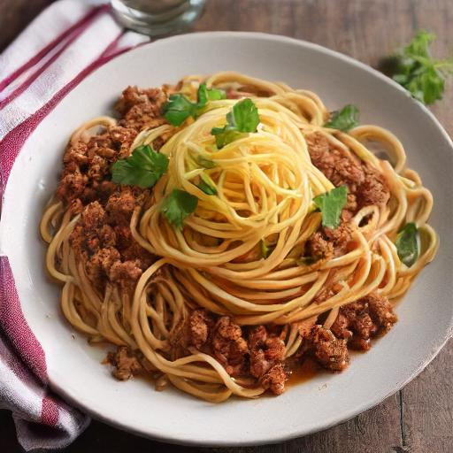

Spaghetti

Description
Spaghetti with meatballs is an Italian-American pasta dish that typically consists of spaghetti noodles, tomato sauce, and meatballs. The dish originated from southern Italy but was further developed by Italian immigrants in the United States. While the traditional Italian version features smaller meatballs, the Italian-American adaptation often includes larger meatballs.
This is my brother's take on Spaghetti. He learned to cook it from my father, who learned it from his mother.
Ingredients
- 1 large box of spaghetti noodles
- 1 green pepper, sliced
- 1 orange pepper, sliced
- 1 yellow pepper, sliced
- 1 large onion, chunked
- 1 small jar of minced garlic
- 1 regular size packaged mushrooms, sliced
- 1 lb Italian sausage, sliced
- 1 1/2 lb of ground beef, for meatballs
- breadcrumbs
- 4 large cans of whole tomatoes, drained and crushed
- 1 large can of tomato paste
- 2 teaspoons of oregano
- 2 teaspoons of parsley
- 2 teaspoons of basil
- 1/2 cup vegetable oil
Steps
-
Spaghetti
- Add the crushed whole tomatoes, tomato paste, italian sausage, mushrooms, garlic, half of the onion, half of all the peppers, and half of all the seasonings in a large pot and heat on medium-high stirring occasionally. When the sauce starts to boil, reduce heat and cover.
- Follow the recipe for the meatballs while the sauce cooks.
- Add meatballs to the sauce. Cook at a simmer for 5 hours stirring occasionally.
- Follow the recipe for the noodles when sauce is done cooking.
- Serve and enjoy!
-
Meatballs
- Add ground beef, breadcrumbs, the rest of the peppers (diced), the rest of the onions, eggs and the remaining seasonings into a large mixing bowl.
- Mix thoroughly.
- Form meatballs to desired sizes.
- In a large skillet add 1/4 cup of vegetable oil, and heat on medium-high until oil is heated up.
- Cook meatballs in skillet, making the outer layer of the meatballs crisp. Turn meatballs as needed to ensure that the entire meatball is seared.
- Add meatballs to sauce.
-
Noodles
- Fill empty pot with hot water, and add the remaining vegetable oil and some salt to the the water.
- Heat water and oil on high heat until boiling.
- Add noodles to the pot and stir thoroughly to make sure the noodles are not sticking to one another.
- Bring the water back to a boil and cook noodles for 10 minutes, stirring occassionally.
- When noodles are ready, remove from heat and drain the water from the noodles.
- Serve and enjoy.